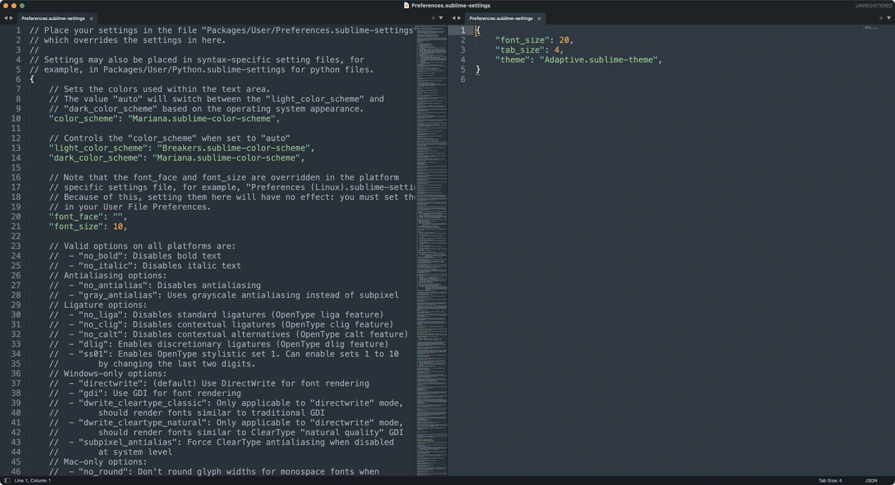

Lowercase
Mis on lowercase vahendid?
Lowercase vahendid on keskendunud SDLC (Software Development Life Cycle) hilisematele etappidele,
eriti üksikasjalikele projekteerimis-, kodeerimis-, testimis- ja hooldusfaasidele.
Nad aitavad koodi genereerida, lähtekoodi hallata ja testimisprotsesse automatiseerida.
Mille jaoks kasutatakse?
Lowercase vahendeid kasutatakse andmebaasi struktuuri genereerimiseks, koodi genereerimiseks,
testide läbiviimiseks, koodi versioonihalduseks, konfiguratsioonihalduseks, pöördprojekteerimiseks jms.
Milliseid lowercase vahendeid olen ise juba kasutanud?
Siin on nimekiri lowercase vahenditest mida olen kasutanud:
- Thonny
- Visual Studio
- Git
- GitHub
- Docker
- Visual Studio Code
- SQL Server Management Studio
- Postman
Kaks näidet lowercase vahendist mida ma veel kasutanud ei ole
-
Vahend - Sublime Text
Logo:

Programmi akna pilt:

Mida vahendiga teha saab:
Sublime Text on teksti- ja lähtekoodiredaktor, millel on minimaalne liides, süntaksi esiletõstmine
ja koodi voltimine koos paljude programmeerimis- ja märgistuskeelte loomuliku toega,
otsimine ja asendamine regulaaravaldiste toega,
integreeritud terminali/konsooli aken ja kohandatavad teemad.
-
Vahend - PyCharm
Logo:
Programmi akna pilt:

Mida vahendiga teha saab:
PyCharm on integreeritud arenduskeskkond (IDE), mida kasutatakse Pythonis programmeerimiseks.
See pakub koodianalüüsi, graafilist silurit, integreeritud üksuse testijat,
integratsiooni versioonihaldussüsteemidega ja toetab veebiarendust Djangoga.
See on platvormideülene ja töötab Microsoft Windowsi, macOS-i ja Linuxiga.
allikad:
DEV Community
EUCIP
Sublime
kinsta
Wikipedia
Wikipedia
JetBrains